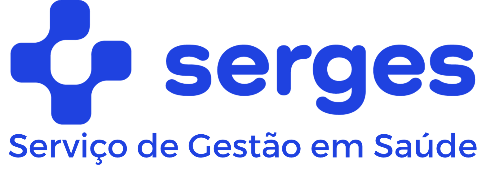
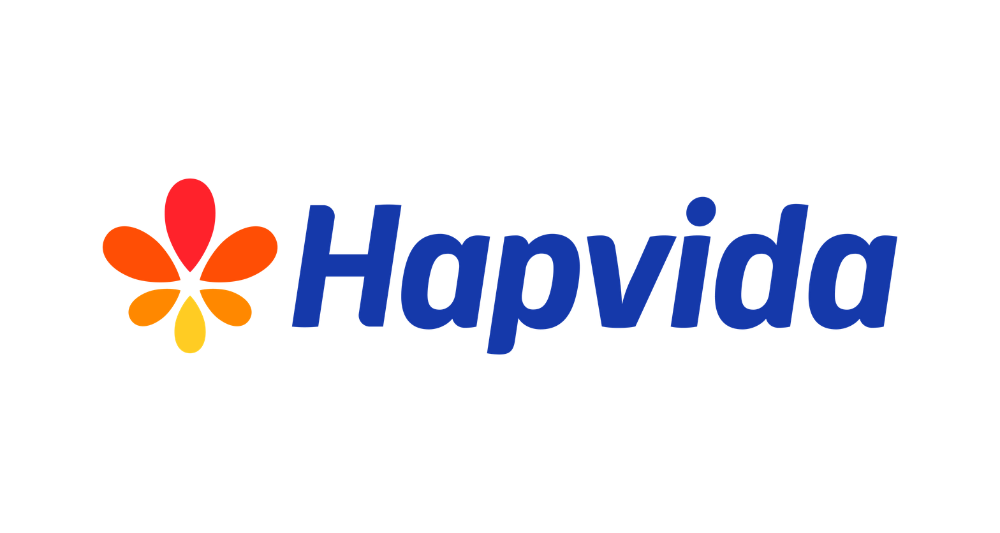

A Serges fornece, credencia e gerencia profissionais de saúde ocupacional para empresas com operações nacionais — com rede própria, cobertura em +3.400 cidades e gestão centralizada.
Empresas que já centralizaram saúde corporativa com a SERGES

Quando cada unidade tem um prestador diferente, a empresa perde rastreabilidade, padronização e controle. Exames atrasam, ASOs ficam inconsistentes e a gestão de SST vira um mosaico.
É aqui que a Serges entra: não apenas credenciando clínicas, mas assumindo a operação de saúde ocupacional da sua empresa.
Da contratação de médicos à gestão completa dos programas — tudo centralizado.
ASO admissional, periódico, demissional, retorno ao trabalho e mudança de risco.
Audiometria, espirometria, acuidade visual, EEG, ECG, raio-X e laboratoriais.
Estruturação e operação de ambulatórios dentro da sua empresa.
Equipes médicas dedicadas no local de trabalho dos seus colaboradores.
Coordenação e elaboração completa dos programas ocupacionais.
Elaboração de quesitos e médico assistente técnico para perícias.
A Serges combina rede médica nacional, gestão operacional e tecnologia para eliminar a fragmentação. Em vez de gerenciar dezenas de prestadores, contratos e contatos regionais, sua empresa conta com um parceiro que assume a responsabilidade pela cobertura, padronização e rastreabilidade.
Acompanhe status de exames, ASOs, programas e indicadores de cobertura em tempo real — com clareza para tomar decisões e eliminar pontos cegos na gestão de SST.
Em 48h você recebe um diagnóstico real: onde a cobertura falha, quanto isso custa e qual é o próximo passo. Sem custo. Sem compromisso.
Seus dados são confidenciais. Usados apenas para a avaliação. Sem spam, sem compartilhamento com terceiros.
Avaliação gratuita. Resultado em 48h. Zero compromisso.
Quero minha avaliação gratuita agora →